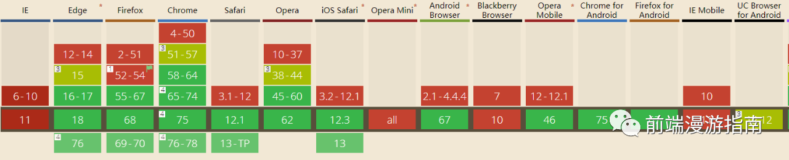
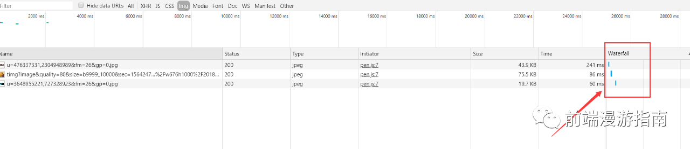
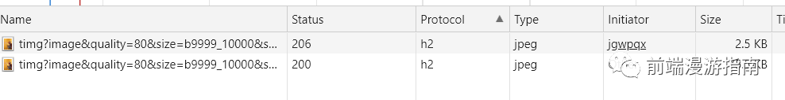
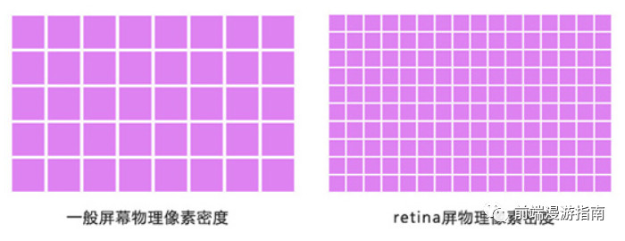
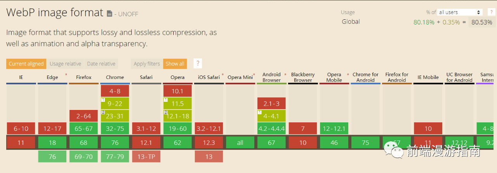
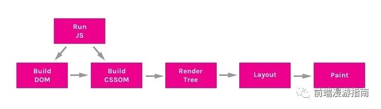

图片优化
前言
本人平时学习及收集内容，欢迎参入一起讨论。
内容
一、为什么要对图片进行优化
对于大多数前端工程师来说，图片就是 UI 设计师（或者自己）切好的图，你要做的只是把图片丢进项目中，然后用以链接的方式呈现在页面上，而且我们也经常把精力放在项目的打包优化构建上，如何分包，如何抽取第三方库....有时我们会忘了，图片才是一个网站最大头的那块加载资源，虽然图片加载可以不阻碍页面渲染，但优化图片，绝对可以让网站的体验提升一个档次。
二、从图片大小开始优化
压缩图片可以使用统一的压缩工具—imagemin，它是一款可以集成多个压缩库的工具，支持 jpg、png、webp 等等格式的图片压缩，比如 pngquant，mozjpeg 等等，作为测试用途，我们可以直接安装 imagemin-pngquant 来尝试 png 图片的压缩
2.1 PNG 压缩
npm install imagemin
npm install imagemin-pngquant
2
这里先安装 imagemin 库，再安装对应的 png 压缩库
const imagemin = require('imagemin');
const imageminPngquant = require('imagemin-pngquant');
(async () => {
await imagemin(['images/*.png'], 'build/images', {
plugins: [
imageminPngquant({ quality: '65-80' })
]
});
console.log('Images optimized');
})();
2
3
4
5
6
7
8
9
10
11
12
我们可以在 quanilty 一项决定压缩比率，65-80 貌似是一个在压缩率和质量之间实现平衡的数值，腾讯 AlloyTeam 出品的 gka 图片处理工具，同样使用到了 imagemin 库，他们黑夜也是使用 65-80 的选项：gka 代码
用它压缩一张 png 图片，我们看看效果如何：
压缩前的：
压缩后的：
从肉眼上几乎看不出区别，但实际上减少了百分之 77 的体积！
2.2 JPG/JPEG 压缩与渐进式图片
压缩 jpg/jpeg 图片的方式与 png 类似,imagemin 提供了一两个插件：jpegtrain 和 mozjpeg 供我们使用。一般我们选择 mozjpeg，它拥有更丰富的压缩选项：
npm install imagemin-mozjpeg
const imagemin = require('imagemin');
const imageminMozjpeg = require('imagemin-mozjpeg');
(async () => {
await imagemin(['images/*.jpg'], 'build/images', {
use: [
imageminMozjpeg({ quality: 65, progressive: true })
]
});
console.log('Images optimized');
})();
2
3
4
5
6
7
8
9
10
11
12
注意到我们使用 progressive:true 选项，这可以将图片转换为渐进式图片，关于渐进式图片，它允许在加载照片的时候，如果网速比较慢的话，先显示一个类似模糊有点小马赛克的质量比较差的照片，然后慢慢的变为清晰的照片：

而相比之下，非渐进式的图片(Baseline JPEG)则会老老实实地从头到尾去加载：

张鑫旭大神的这篇文章，可以帮你更好地了解两者的区别：渐进式 jpeg(progressive jpeg)图片及其相关
简单来说，渐进式图片一开始就决定了大小，而不像 Baseline 图片一样，不断地从上往下加载，从而造成多次回流，但渐进式图片需要消耗 CPU 去多次计算渲染，这是其主要缺点。
当然，交错式 png 也可以实现相应的效果，但目前 pngquant 没有实现转换功能，但是 ps 中导出 png 时是可以设置为交错式的。
2.3 在真实项目中如何操作？
实际项目中，总不能 UI 丢一个图过来你就跑一遍压缩代码吧？幸好 imagemin 有对应的 webpack 插件，在 webpack 遍地使用的今天，我们可以轻松指压缩：
npm install imagemin-webpack-plugin
先安装 imagemin-webpack-plugin
import ImageminPlugin from 'imagemin-webpack-plugin'
import imageminMozjpeg from 'imagemin-mozjpeg'
module.exports = {
plugins: [
new ImageminPlugin({
plugins: [
imageminMozjpeg({
quality: 100,
progressive: true
})
]
})
]
}
2
3
4
5
6
7
8
9
10
11
12
13
14
15
接着在 webpack 配置文件中，引入自己需要的插件，使用方法完全相同。
三、通过图片按需加载减少请求压力
图片按需加载是个老生常谈的话题，传统做法自然是通过监听页面的滚动位置，符合条件了再去资源加载，我们看看如今还有什么方法可以做到按需加载。
3.1 使用强大的 IntersectionObserver
IntersectionObserver 提供给我们一项能力：可以用来监听元素是否进入了设备的可视区域之内，这意味着：我们等待图片元素进入可视区域后，再决定是否加载它，毕竟用户没有看到图片前，根本不关心它是否已经加载了。
这是 Chrome51 率先提出和支持的 API，而在 2019 年的今天，各大浏览器对它的支持度已经有所改善(除了 IE，全线崩~)：

废话不多说，上代码：首先假设我们有一个图片列表，它们的 src 属性我们暂不设置，而用 data-src 来替代：
<li>
<img class="list-item-img" alt="loading" data-src='a.jpg'/>
</li>
<li>
<img class="list-item-img" alt="loading" data-src='b.jpg'/>
</li>
<li>
<img class="list-item-img" alt="loading" data-src='c.jpg'/>
</li>
<li>
<img class="list-item-img" alt="loading" data-src='d.jpg'/>
</li>
2
3
4
5
6
7
8
9
10
11
12
这样会导致图片无法加载，这当然不是我们的目的，我们想做的是，当 IntersectionObserver 监听到图片元素进入可视区域时，将 data-src“还给”src 属性，这样我们就可以实现图片加载了：
const observer = new IntersectionObserver(function(changes){
changes.forEach(function(element,index){
// 当这个值大于0，说明满足我们的加载条件了，这个值可通过rootMargin手动设置
if(element.intersectionRatio>0){
// 放弃监听，防止性能浪费，并加载图片
observer.unobserve(element.target);
element.target.src=element.target.dataset.src;
}
});
});
function initObserver(){
const listItems = document.querySelectorAll('.list-item-img');
listItems.forEach(function(item){
// 对每个list元素进行监听
observer.observe(item);
});
}
initObserver();
2
3
4
5
6
7
8
9
10
11
12
13
14
15
16
17
18
19
运行代码并观察控制台的 Network，会发现图片随着可视区域的移动而加载，我们的目的达到了。

ps：一个 vue 的图片懒加载组件 vue-view-lazy，也是基于 IntersectionObserver 实现的
3.2 还是 Chrome 的黑科技——loading 属性
从新版本 Chrome(76)开始，已经默认支持一种新的 html 属性——loading，它包含三种取值：
- auto：让浏览器自动决定是否进行懒加载，这其中的机制尚不明确。
- lazy：明确地让浏览器对此图片进行懒加载，即当用户滚动到图片附近时才进行加载，但目前没有具体说明这个“附近”具体是多近。
- eager：让浏览器立刻加载此图片。
我们可以通过 chrome 的开发工具看看这个 demo 中的图片加载方式，我们把上一个 demo 中的 js 脚本删掉了，只用了 loading=lazy 这个属性。接着，勾选工具栏中的 Disabled Cache 后仔细观察 Network 一栏，细心的人应该会发现，一张图片被分为了两次去请求！第一次的状态码是 206，第二次状态码才是 200，如图所示：

这个现象跟 chrome 的 lazy-loading 功能的实现机制有关；
首先，浏览器会发送一个预请求，请求地址就是这张图片的 url，但是这个请求只摘取这张图片的头部数据，大约 2kb，具体做法是在请求头中设置 range:butes=0-2047，
 而从这段数据中浏览器就可以解析出图片的宽高等基本维度，接着浏览器立马为它生成一个空白的占位，以免图片加载过程中而页面不断跳动，这很合理，总不能为了一个懒加载，让用户牺牲其他方面的体验吧？这个请求返回的状态是 206，表明：客户端通过发送范围请求头 Range 抓取到了资源的部分数据，详细的状态码解释可以看看这篇文章
而从这段数据中浏览器就可以解析出图片的宽高等基本维度，接着浏览器立马为它生成一个空白的占位，以免图片加载过程中而页面不断跳动，这很合理，总不能为了一个懒加载，让用户牺牲其他方面的体验吧？这个请求返回的状态是 206，表明：客户端通过发送范围请求头 Range 抓取到了资源的部分数据，详细的状态码解释可以看看这篇文章然后，在用户滚动到图片附近时，再发起一个请求，完整地摘取图片的数据下来，这个才是我们熟悉的状态码 200 请求。 可以预测到，如果以后这个属性被普遍使用，那一个服务器要处理的图片请求连接数可能会变成两倍，对服务器的压力会有所增大，但时代在进步，我们可以依靠 http2 多路复用的特性来缓解这个压力，这时候就需要技术负责人权衡利弊了
要注意，使用这项我进行图片懒加载时，刻先进行兼容性处理，对不支持这项属性的浏览器，转而使用 JavaScript 来实现，比如上面说到的 IntersectionObserver：
if ("loading" in HTMLImageElement.prototype) {
// 没毛病
} else {
// .....
}
2
3
4
5
3.3 还可以做到锦上添花！
以上介绍的两种方式，其实最终实现的效果是相似的，但这里还有个问题，当网速慢的时候，图片还没加载完之前，用户会看到一段空白时间，在这段空白时间，就算是渐进图片也无法发挥它的作用，我们需要更友好的展示方式来弥补这段空白，有一种方法简单粗暴，那就是用一张占位图来顶替，这张占位图被加载过一次后，即可从缓存中取出，无须重新加载，但这种图片会显得有些千篇一律，并不能很好地做到 preview 的效果。这里我向大家介绍另一种占位图做法——css 渐变色背影，原理很简单，当 img 标签的图片还没有加载出来，我们可以为其设置背景色，比如：
<img src="a.jpg" style="background: red;"/>
这样会先显示出红色背景，再渲染出真实的图片，重点来了，我们此时要借用工具为这张图片“配制”出合适的渐变背景色，以达到部分 preview 的效果，我们可以使用Gradient Image Placeholders这篇文章中推荐的工具 GIP 进行转换，这里附上在线转换的地址gip经过转换后，我们得到了下面这串代码：
background: linear-gradient(
to bottom,
#1896f5 0%,
#2e6d14 100%
)
2
3
4
5
最终效果如下所示：
四、响应式图片的实践
我们经常会遇到这种情况：一张在普通笔记本上显示清晰的图片，到了苹果的 Retina 屏幕或是其他高清晰度的屏幕上，就变得模糊了。
这是因为，在同样尺寸的屏幕上，高清屏可以展示的物理像素点比普通屏多，比如 Retina 屏，同样的屏幕尺寸下，它的物理像素点的个数是普通屏的 4 倍(2*2)，所以普通屏上显示清晰的图片，在高清屏上就像是被放大了，自然就变得模糊了，要从图片资源上解决这个问题，就需要在设备像素密度为 2 的高清屏中，对应地展示一张两倍大小的图。

而通常来讲，对于背影图片，我们可以使用 css 的@media 进行媒体查询，以决定不同像素密度下该用哪张倍图，例如：
.bg{
background-image:url("bg.png");
width:100px;
height:100px;
background-size:100% 100%;
}
@media(-webkit-min-device-pixel-ratio:2),(min-device-pixel-ratio:2){
.bg {
background-image: url("bg@2x.png") // 尺寸为200 * 200的图
}
}
2
3
4
5
6
7
8
9
10
11
这么做有两个好处，一是保证高像素密度的设备下，图片仍能保持应有的清晰度，二是防止在低像素密度的设备下加载大尺寸图片造成浪费。
那么如何处理 img 标签呢？
我们可以使用 HTML5 中 img 标签的 srcset 来达到这个效果，代码如下：
<img width="320" src="bg@2x.png" srcset="bg.png 1x;bg@2x.png 2x" />
这段代码的作用是：当设备像素密度，也就是 dpr(devicePixelRatio)为 1 时，使用 bg.png，为 2 时使用二倍图 bg@2x.png，依此类推，你可以根据需要设置多种精度下要加载的图片，如果没有命中，浏览器会选择最邻近的一个精度对应的图片进行加载。要注意：老旧的浏览器不支持 srcset 的特性，它会继续正常加载 src 属性引用的图像。
五、安全地使用 WebP 图片
WebP 优势这里不再赘述，简单来说就是：同样尺寸的图片，WebP 能保证比未压缩过的 png、jpg、gif 等格式的图片减少百分之 40-70（甚至 90）的比例，且保证较高的质量，更可以支持显示动态图和透明通道。
但目前 WebP 的兼容性并不太好：

但我们可以通过两种方式，对暂未支持 webp 的浏览器进行兼容：
picture 结合 source 标签
HTML5 的 picture 标签，可以理解为相框，里面可以支持多种格式的图片，并保留一张默认底图：
<picture>
<source srcset="bg.webp" type="images/webp">
<source srcset="bg.jpg" type="images/jpeg">
<img src="bg.jpg" alt="背景图">
</pictrue>
2
3
4
5
有了这段代码，浏览器会自动根据是否支持 webp 格式来选择加载哪张图片，若不支持，则会显示 bg.jpg，如果浏览器连 picture 都不支持，那么会 fallback 到默认的 img 图片，这是必不可少的一个选项。
而且这里要注意 source 的放置顺序，如果把 jpg 放在第一位，webp 放在第二位，即使用浏览器支持 webp，那么选择加载 jpg 图片。
借助 cdn 服务自动判断
目前，有些图片 cdn 服务可以开启自动兼容 webp 的模式，即支持 webp 的浏览器则将原图转换为 webp 图片并返回，否则直接返回原图。实现这个功能的原理是，根据浏览器发起的请求头中的 Accept 属性是否包含 webp 格式来判断：

有则说明浏览器支持 webp 格式，这对于开发者来说可能是最简单的兼容方案，但是依赖于后端服务。
六、对 Base64Url 的反思
Base64 就是一种基于 64 个可打印字符来表示二进制数据的方法，编码过程是从二进制数据到字符串的过程，在 web 应用中我们经常用它来做啥呢——传输图片数据。HTML 中，img 的 src 和 css 样式的 background-image 都可以都可以接受 base64 字符串，从而在页面上渲染出对应的图片。正是基于浏览器的这项能力，很多开发者提出了将多张图片转换为 base64 字符串，放进 css 样式文件中的“优化方式”，这样做的目的只有一个——减少 HTTP 请求数。但实际上，在如今的应用开发中，这种做法大多数情况是“负优化”效果，接下来让我们细数 base64 Url 的“罪状”
6.1 让 css 文件的体积失去控制
当你把图片转换为 base64 字符串之后，字符串的体积一般会比原图更大，一般会多出接近 3 成的大小，如果你一个页面中有 20 张平均大小为 50KB 的图片，转它们为 base64 后，你的 css 文件将可能增大 1.2MB 的大小，这样将严重阻碍浏览器的关键渲染路径：

css 文件本身就是渲染阻塞资源，浏览器首次加载时如果没有全部下载和解析完 css 内容就无法进行渲染树的构建，而 base64 的嵌入则是雪上加霜，这将把原生浏览器可以进行优化的图片异步加载，变成首屏渲染的阻塞和延迟。
或许有人会说，webpack 的 url-loader 可以根据图片大小决定是否转为 base64(一般是小于 10kb 的图片)，但你也应该担心如果页面中有 100 张小于 10kb 的图片时，会给 css 文件增加多少体积。
6.2 让浏览器的资源缓存策略功亏一篑
假设你的 base64Url 会被你的应用多次利用，本来浏览器可以直接从本地缓存取出的图片，换成 base64Url，将造成应用中多个页面重复下载 1.3 倍大小的文本，假设一张图片是 100kb 大小，被你的应用使用了 10 次，那么造成的流量浪费将是(100 *1.3 *10) - 100 = 1200kb。
6.3 低版本浏览器的兼容问题
这是比较次要的问题，dataurl 在低版本 IE 浏览器，比如 IE8 及以下的浏览器，会有兼容性问题，详细情况可以参考这篇文章
6.4 不利于开发者工具调试与查看
无论哪张图片，看上去都是一堆没有意义的字符串，光看代码无法知道原图是哪张，不利于某些情况下的比对。
说了这么多，有人可能不服气，既然这种方案缺点这么多，为啥它会从以前就被广泛使用呢？
参考资料
联系作者
平凡世界，贵在坚持。